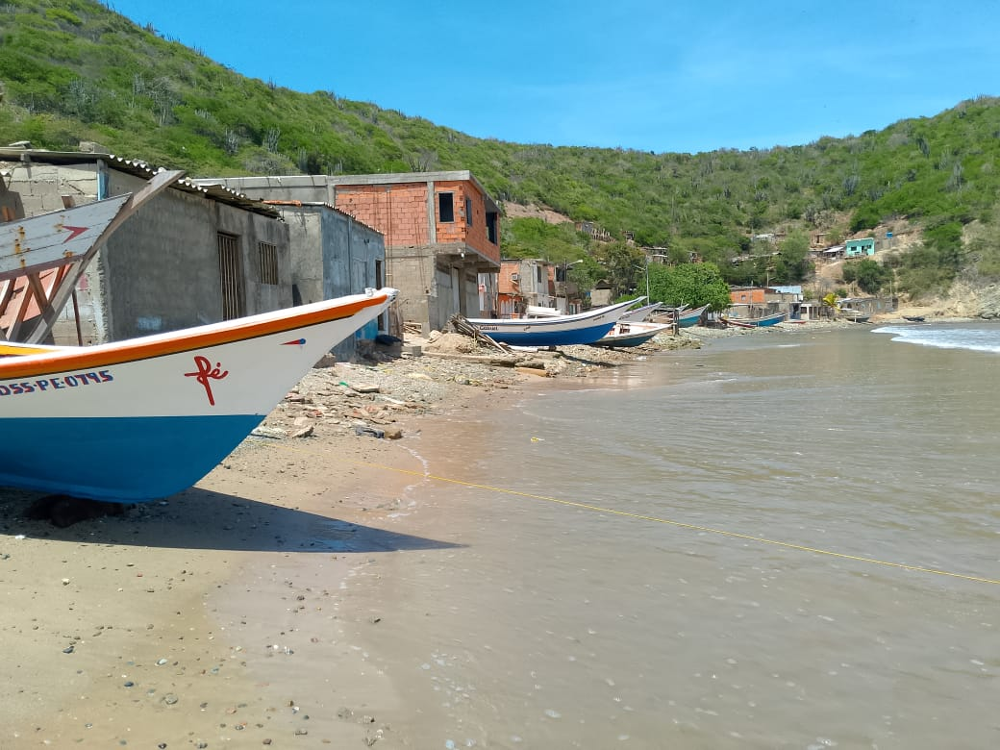
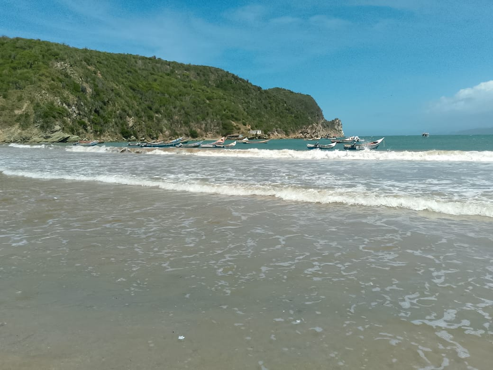
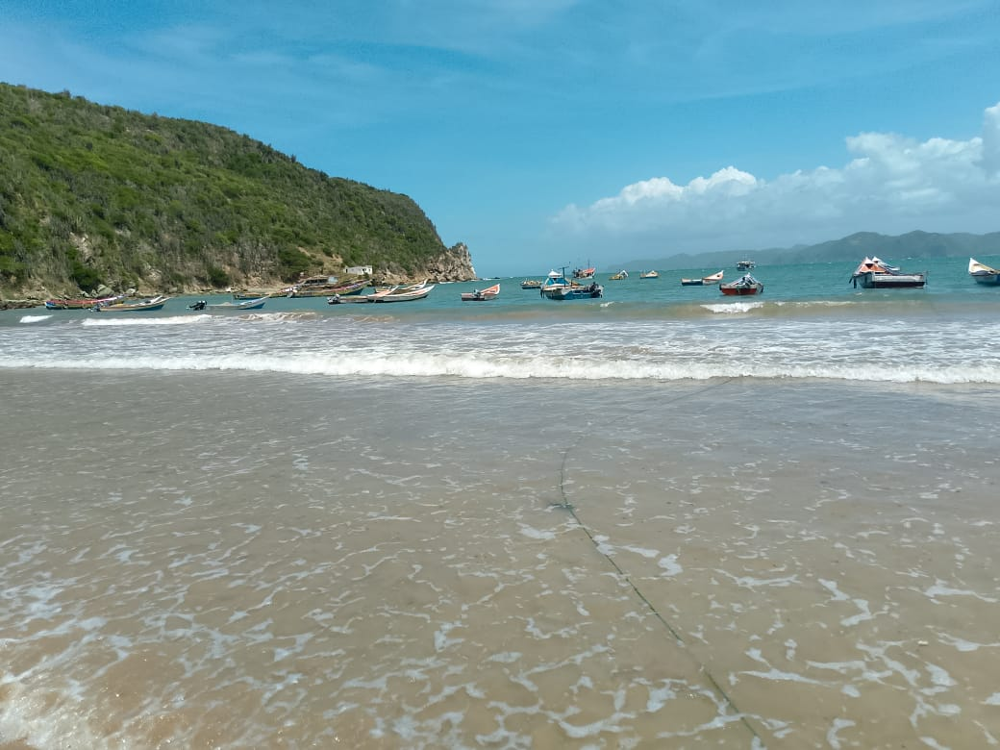
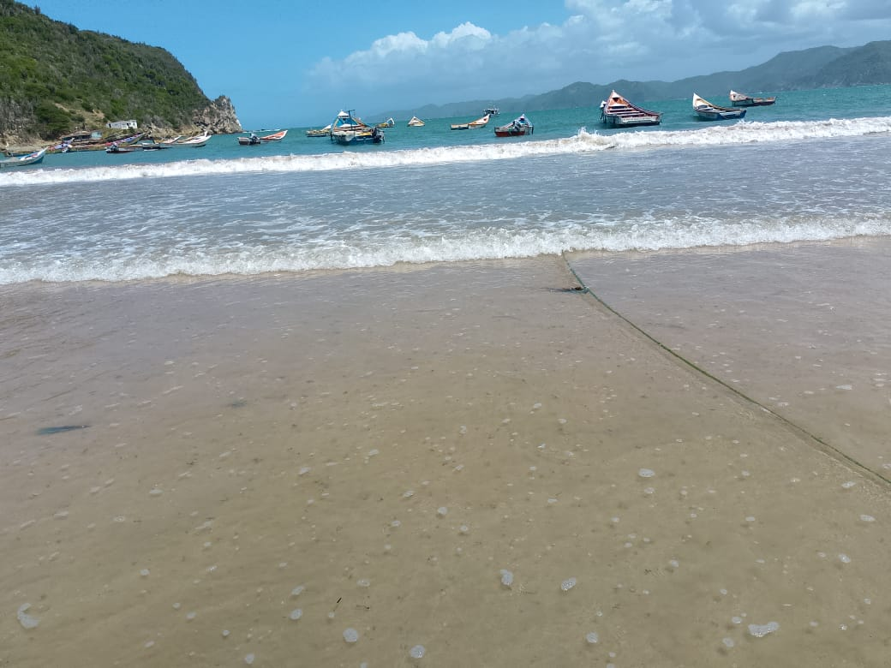
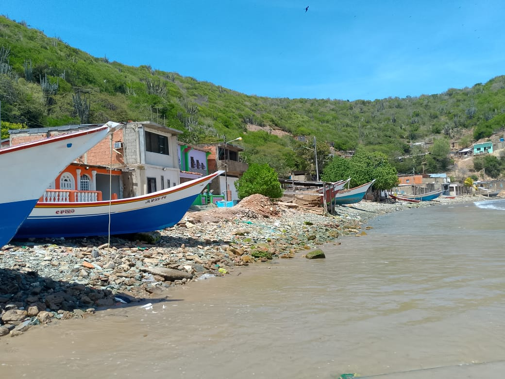
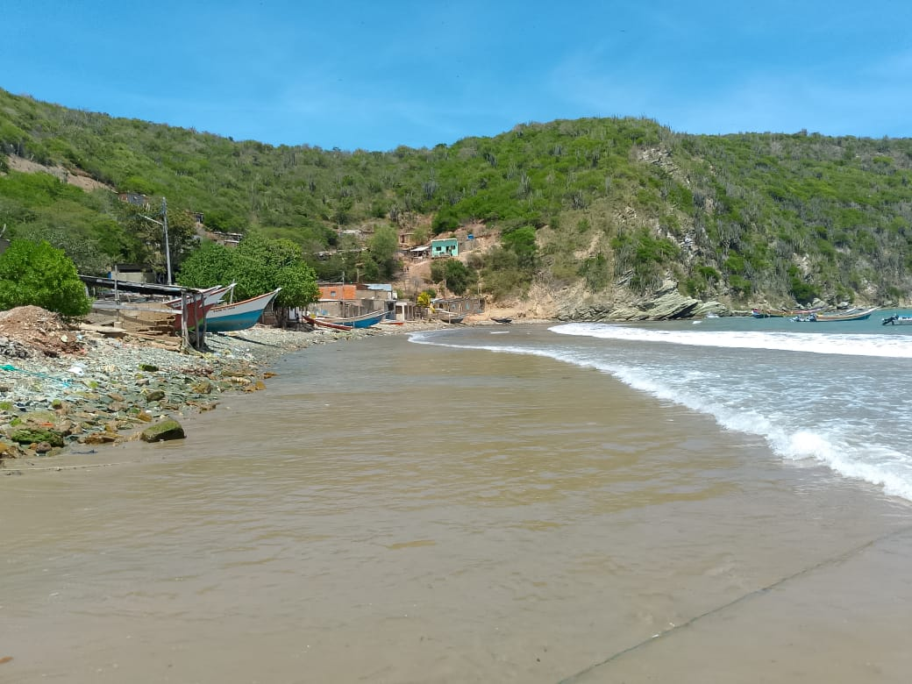

Si vas con la mente puesta en la Playita de las Piedras, inevitablemente vas a pasar por El Olivito. Esta no es la típica playa de postal para quedarse todo el día, sino más bien el punto de partida donde se empieza a sentir el ambiente del Morro. Es una playa sencilla, sin grandes lujos ni distracciones, ideal para quienes prefieren ver la rutina auténtica del pueblo antes de lanzarse a buscar la adrenalina en los peñascos. Aquí el atractivo no es la playa en sí, sino esa sensación de estar en el camino correcto hacia lo más emocionante del sector de Playa Arriba.




Lo que hace que valga la pena detenerse un segundo en El Olivito es observar el alma del pescador de Puerto Santo. Verás los botes alineados y esa hilera de cuerdas que cruzan la arena, recordándote que estás en una zona donde el mar es puro trabajo y vida diaria. No es una parada convencional para el turista que busca sombrillas, sino para el que disfruta de lo real, de caminar por la orilla esquivando amarras y viendo cómo se preparan las embarcaciones para la faena. Es, sencillamente, el preámbulo necesario para lo que viene después.

Cómo Llegar
Para encontrar la playa de los Olivito solo debes dirigirte a su sector como punto de referencia se encuentra a mano derecha del Ambulatorio Francisco "Chico" Marcano
Mejores Días
Los mejores días para pasar por aquí son los fines de semana si quieres ver todo el movimiento del pueblo, o cualquier mañana despejada para disfrutar del camino hacia los clavados con buena luz.
¿Por Qué Visitarla?
Debes visitarla principalmente como punto de acceso y paso obligado, aprovechando el camino para ver de cerca cómo los pescadores aseguran sus botes entre los bajos de arena
La Playa de El Olivito
Ubicada en la de Playa Arriba, El Olivito se caracteriza por una dinámica de sedimentación particular que forma "bajos" o bultos de arena justo en la orilla. Estas acumulaciones irregulares interrumpen la planicie del suelo y cambian con la marea, dándole un relieve accidentado al primer contacto con el agua. A diferencia de otras playas vecinas más llanas, aquí se percibe un entorno funcional dominado por la logística marítima, donde el espacio entre las casas y el agua se utiliza principalmente para el resguardo de las embarcaciones locales.
